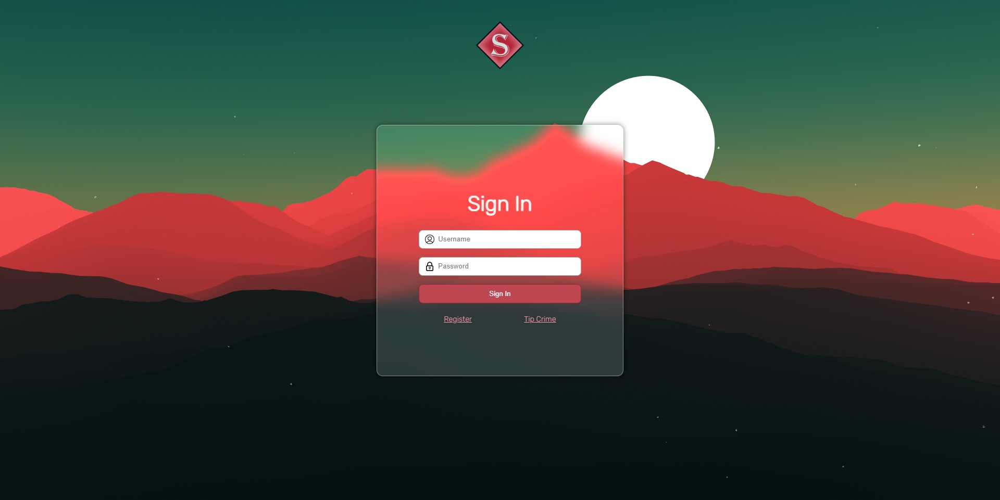
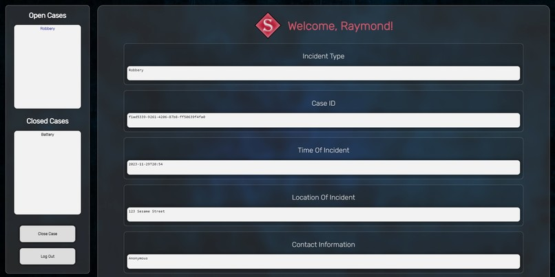

Secure Insights
Description
Secure Insights is an innovative platform designed to empower users to report crimes securely. Users can submit crime tips and information related to criminal activities while ensuring their anonymity and safety. Law enforcement officers can efficiently manage and review the submissions through an online password protected dashboard, enhancing community safety and crime prevention efforts.
Skills Utilized
- Python: Utilized to develop the WebSocket server, used for real-time communication between clients and the server.
- MongoDB: Integrated MongoDB to store and manage data efficiently.
- HTML: Used to structure the web pages and provide the foundation for user interaction.
- CSS: Implemented CSS for styling and enhancing the visual appeal of the Secure Insights platform, ensuring a seamless user experience.
- JavaScript: Utilized JavaScript to create client connections to the websocket server.
Links
Github Repository Link: Click To Visit Github
Devpost Project Link: Click To Visit Devpost
Contact Information
Email: Raymondzheng2000@gmail.com
Phone: +1 437-986-6118
LinkedIn: Visit my LinkedIn
Github: Visit my Github